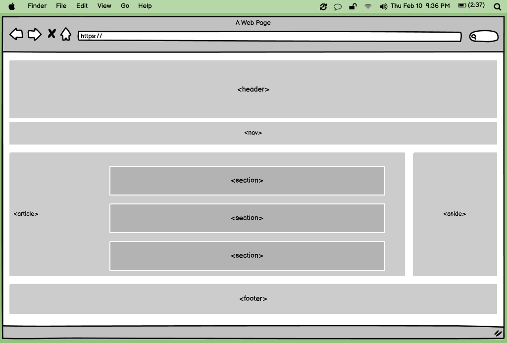
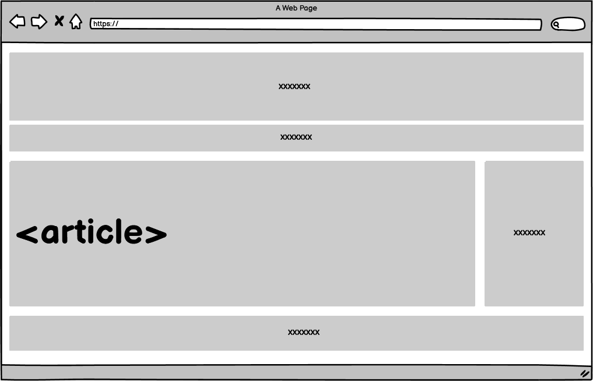
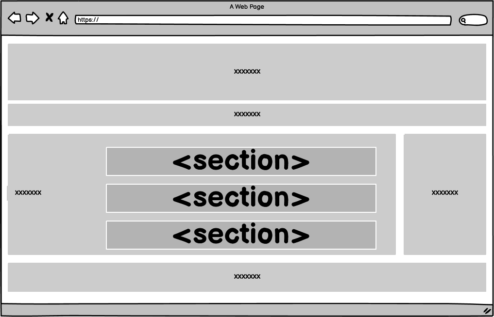
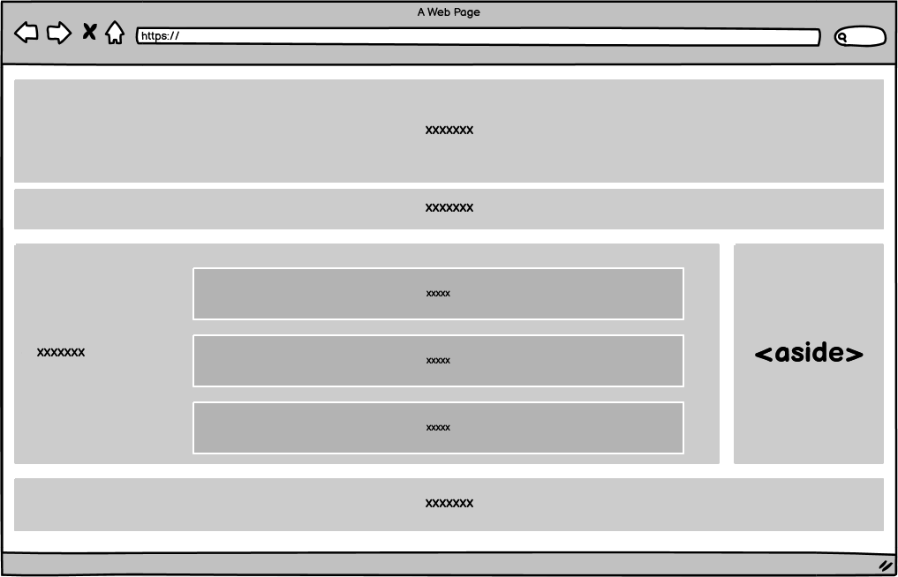
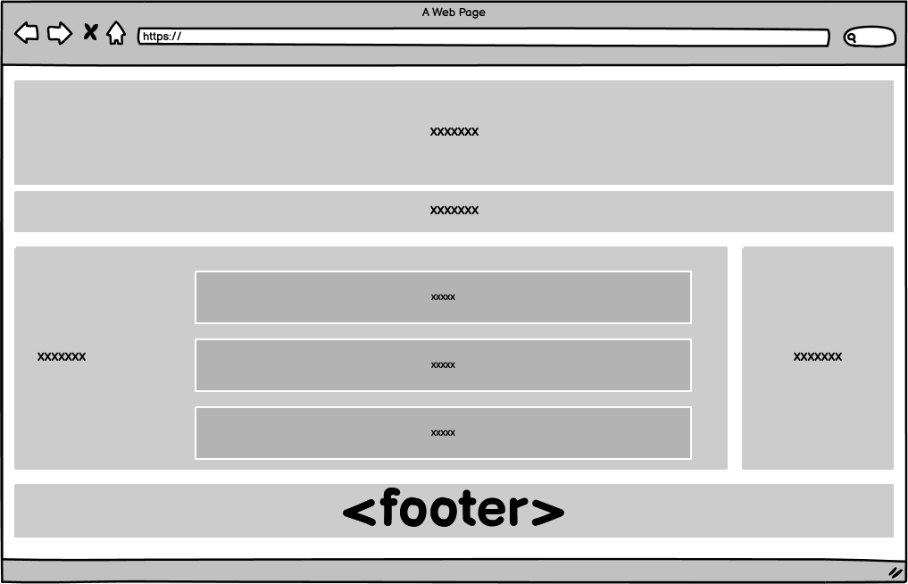
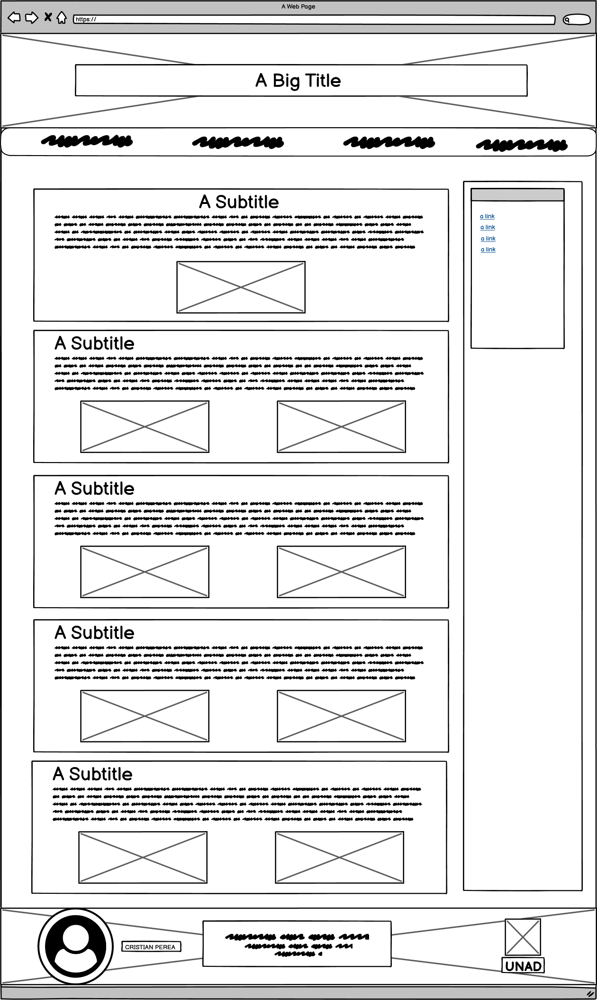

El objetivo del OVI es guiar a los estudiantes como herramienta de aprendizaje. Dándoles información de manera virtual y poder Utilizar esta como instrumento donde puedan ser creadores, diseñadores, organizadores y colaboradores de páginas Web.
OBJETIVO ESPECÍFICO 1:
Que los estudiantes aprendan a planificar y crear una PAGINA WEB, estructurada con elementos comunes; evitando así la ambigüedad y que puedan asignar áreas o secciones de contenido, que sean fáciles de reconocer.
OBJETIVO ESPECÍFICO 2:
Que los Tutores tengan una herramienta virtual como apoyo en sus labores educativas y pedagógicas, siendo un elemento indispensable en el inicio del desarrollo de una página web.
OBJETIVO ESPECÍFICO 3:
Que los estudiantes aprendan a usar estas herramientas y hagan uso de estas como métodos que les permitan una mayor claridad, lógica y orden en sus creaciones, evitando así problemas y/o errores en sus diseños a futuro.
Además de definir partes individuales de una pagina (como un párrafo o una imagen), HTML5 también dispone de elementos de bloque que se pueden utilizar para estructurar las distintas áreas de un sitio web. Al utilizar estas etiquetas para tipos de contenido específico, se mejora la legibilidad y facilidad de reutilización tanto del código HTML5 como de las hojas de estilo. Una página web típica lleva la siguiente estructura semántica:

Algunas de las etiquetas distintivas de una página HTML5 estructurada:
Encuadra un bloque de contenido independiente, que tiene sentido por sí mismo aparte del resto de la página, puede contener otros elementos article y section.

Es parecido o similar al elemento article, pero se usa para agrupar cada parte de la página que constituye una sección en sí misma, más grande, o contenido principal, puede contener elementos article y section. Se sugiere iniciar éstas con un título de encabezado (h1, h2...).

Incluye contenido que no está directamente relacionado con el contenido principal (secundario), pero que puede aportar información adicional relacionada indirectamente con él (resúmenes, biografías del autor, enlaces relacionados, etc.), suele ponerse a un lado del documento.

Representa un grupo de contenido al final de la página: (Direcciones, Autor, licencias, fechas, etc.)


Carrera: Ingeniería de Sistemas
Fecha: 16/Septiembre/2020
Correo:cfpereaa@unadvirtual.edu.co